Chapter 07 — Authorization Protocol
This chapter defines the Authorization Layer of the NEW-shot2play Protocol Suite Version 2.0.
The Authorization Layer converts the applicable authorization inputs and Policy Evaluation results into an explicit Authorization Decision that governs whether a requested Service Action may be executed.
Authentication establishes authenticated identity. Entitlement establishes applicable rights or usage qualifications. Policy Evaluation determines whether applicable conditions are satisfied. Authorization determines whether the requested Service Action may be executed.
7.1 Purpose and Scope
The purpose of the Authorization Layer is to provide a distinct protocol mechanism for generating, validating, binding, and enforcing an Authorization Decision.
This chapter defines:
- Authorization Object;
- Authorization Request;
- Authorization Context;
- Authorization Evaluation;
- Authorization Decision;
- Decision state;
- Decision validity;
- Decision binding;
- Service execution authorization;
- revocation and invalidation;
- revalidation;
- distributed authorization consistency;
- fail-closed behavior; and
- Authorization conformance requirements.
7.2 Authorization as a Protocol Layer
Authorization SHALL be implemented as a protocol layer logically distinct from Authentication, Entitlement, and Policy Evaluation.
The Authorization Layer SHALL consume the outputs of the preceding layers together with the current authorization request and required context.
Authentication
|
v
Authenticated Identity
|
v
Entitlement
|
v
Entitlement State
|
v
Policy Evaluation
|
v
Policy Evaluation Result
|
v
Authorization
|
v
Authorization Decision
|
v
Service Execution
The separation SHALL prevent a successful operation at an earlier layer from being interpreted as an authorization grant by itself.
7.3 Authorization Object
An Authorization Object SHALL represent the authorization state or authorization result associated with a specific authorization operation.
The Authorization Object SHALL be logically distinguishable from the Policy Object and Entitlement Object.
Representative Authorization Object attributes include:
- Authorization Identifier;
- Authorization Request Identifier;
- Identity Identifier;
- Entitlement Identifier;
- Policy Identifier;
- Policy Version;
- Authorization Scope;
- Decision State;
- Decision Timestamp;
- Validity Interval;
- Decision Binding Information; and
- Service Execution Binding Information.
The exact representation MAY vary between implementations, provided that the semantics defined by this specification are preserved.
7.4 Authorization Identifier
Each Authorization operation SHALL have an Authorization Identifier or equivalent unique reference.
The Authorization Identifier SHALL permit the Authorization Decision to be associated with:
- the corresponding Authorization Request;
- the applicable Policy Evaluation;
- the applicable Entitlement state;
- the Service Action; and
- the resulting Service execution.
An Authorization Identifier SHALL NOT be reused for a semantically different authorization operation.
7.5 Authorization Request
An Authorization Request SHALL identify the operation for which authorization is requested.
An Authorization Request SHOULD contain:
- Request Identifier;
- Identity reference;
- Entitlement reference, where applicable;
- Policy reference, where applicable;
- Service Identifier;
- Resource Identifier;
- Action Identifier;
- requested scope;
- request timestamp; and
- required Authorization Context.
The Authorization Request SHALL be bound to the Service Action for which authorization is being requested.
A valid Authentication state without a corresponding valid Authorization Request SHALL NOT produce an Authorization Decision.
7.6 Authorization Request Integrity
The Authorization Request SHALL be protected against unauthorized modification between its creation and Authorization Evaluation.
Where the request is transmitted between protocol components, the receiving component SHALL verify the integrity and authenticity requirements applicable to the request.
A request that fails required integrity verification SHALL NOT produce an Allow Authorization Decision.
7.7 Authorization Context
Authorization Context contains the current state required to evaluate whether the requested Service Action may be authorized.
Authorization Context MAY include:
- authenticated session state;
- Entitlement state;
- Policy Evaluation result;
- Service state;
- resource state;
- transaction state;
- device state;
- location state;
- time state;
- risk state; and
- external event state.
Only context applicable to the requested operation SHALL be used to generate the Authorization Decision.
7.8 Authorization Context Assembly
Before Authorization Evaluation, the implementation SHALL assemble the required Authorization Context.
Context assembly MAY require information from multiple protocol layers or distributed services.
Where a required context element is unavailable, invalid, expired, revoked, or inconsistent, the implementation SHALL determine whether the Authorization Decision can still be established under the applicable Policy and security requirements.
A required context element that cannot be established SHALL NOT be treated as valid merely because the request otherwise appears authentic.
7.9 Authorization Evaluation
Authorization Evaluation SHALL combine the applicable authorization inputs to determine whether an Authorization Decision may be generated.
Representative evaluation inputs include:
- Identity;
- Entitlement State;
- Policy Evaluation Result;
- Authorization Request;
- Authorization Context;
- Service State; and
- applicable security state.
Authorization Evaluation SHALL use the authoritative state required by the applicable Policy and Authorization rules.
7.10 Authorization Evaluation Model
The Authorization Evaluation Model defines the relationship between the principal authorization inputs and the Authorization Decision.
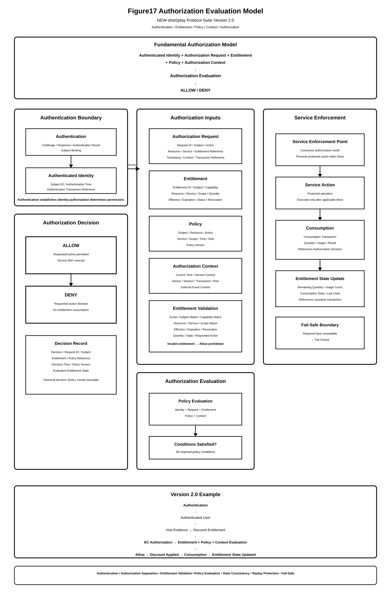
The evaluation SHALL establish whether the required authorization conditions are simultaneously satisfied.
An Allow result SHALL require satisfaction of all required conditions applicable to the requested Service Action.
7.11 Authorization Decision
An Authorization Decision SHALL explicitly indicate the result of Authorization Evaluation.
Representative Decision results include:
- Allow;
- Deny; and
- Indeterminate or Fail-Closed.
The Authorization Decision SHALL be associated with the Authorization Identifier.
An Authorization Decision SHALL NOT be interpreted as a permanent right to execute the Service Action.
The Decision SHALL remain subject to its validity interval, scope, binding conditions, and applicable revocation or invalidation rules.
7.12 Authorization Decision Dependencies
The Authorization Decision SHALL depend on the required inputs defined by the applicable Authorization and Policy rules.
Representative dependencies include:
- authenticated identity;
- current Entitlement state;
- applicable Policy;
- Policy Evaluation result;
- Authorization Request;
- Authorization Context; and
- current security state.
Where a required dependency is invalid or unavailable, the Authorization Decision SHALL NOT produce an Allow result unless the applicable protocol explicitly establishes that the dependency is not required for the requested operation.
7.13 Decision Dependency and Precedence
Authorization Decision generation SHALL apply deterministic dependency and precedence rules.
Where multiple authorization inputs provide conflicting results, the implementation SHALL apply the applicable precedence rules rather than selecting a result arbitrarily.
Security-relevant invalidation, revocation, expiration, or integrity failure SHALL take precedence over a previously established Allow condition where the affected state is required for continued authorization.
7.14 Authorization Decision Validity
An Authorization Decision SHALL have an explicitly determinable validity state.
Validity MAY be established by:
- validity interval;
- Decision State;
- Entitlement state;
- Policy state;
- authorization scope;
- service state; and
- security state.
A Decision that is no longer valid SHALL NOT be enforced.
7.15 Authorization Scope
An Authorization Decision SHALL identify the scope of the authorization being granted.
Scope MAY include:
- Service;
- Resource;
- Action;
- Operation parameters;
- transaction;
- time interval; and
- other Policy-defined constraints.
An implementation SHALL NOT use an Authorization Decision outside its defined scope.
7.16 Conditional Authorization
An Authorization Decision MAY be conditional upon one or more continuing conditions.
A continuing condition MAY include:
- continued Entitlement validity;
- continued Policy validity;
- continued session validity;
- transaction state;
- resource state;
- time validity;
- location validity;
- device validity; or
- security state.
Where a continuing condition becomes unsatisfied, the Authorization Decision SHALL be subject to revalidation or invalidation according to the applicable protocol rules.
7.17 Decision State
An Authorization Decision SHALL have an explicit state.
Representative states include:
- Pending;
- Allow;
- Deny;
- Invalid;
- Revoked; and
- Expired.
State transitions SHALL be governed by explicit protocol rules.
An implementation SHALL NOT transition an Invalid, Revoked, or Expired Decision directly to Allow without a new valid Authorization Evaluation.
7.18 Decision Binding
An Authorization Decision SHALL be bound to the authorization operation for which it was generated.
The binding SHALL prevent an Authorization Decision generated for one request, resource, action, or service context from being silently reused for a different authorization operation.
Representative binding inputs include:
- Authorization Identifier;
- Authorization Request Identifier;
- Identity Identifier;
- Entitlement Identifier;
- Policy Identifier and Version;
- Service Identifier;
- Resource Identifier;
- Action Identifier; and
- applicable Authorization Context.
7.19 Decision Binding to Service Execution
A Service SHALL execute a protected operation only when the execution is authorized by a valid Authorization Decision.
The Authorization Decision SHALL be associated with the Service Action being executed.
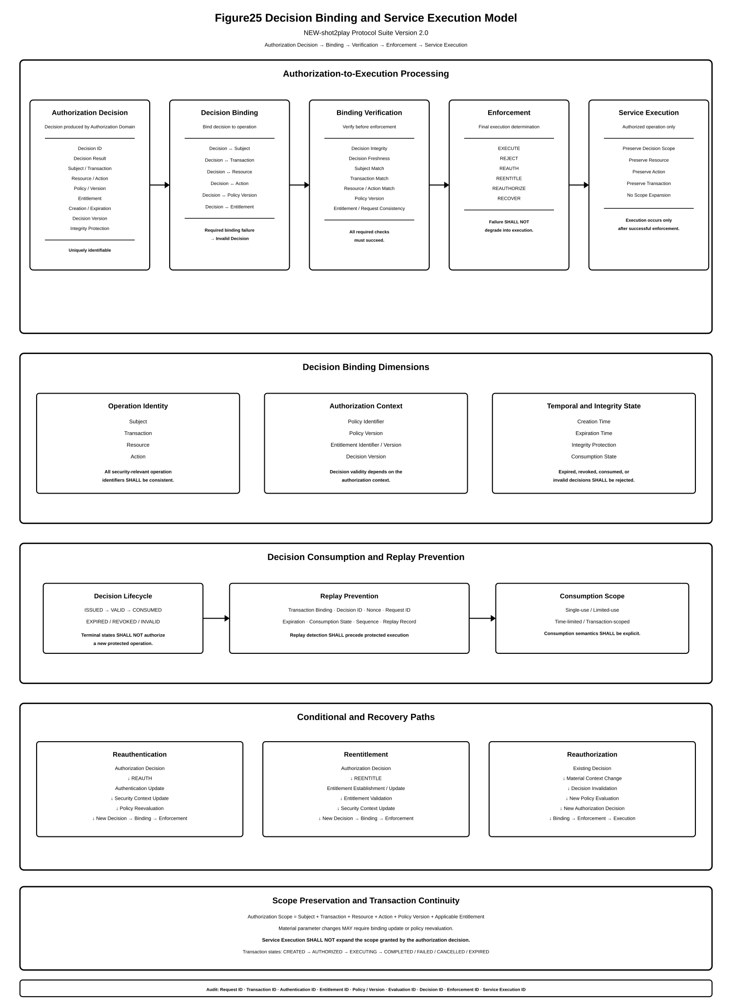
A Service MUST NOT treat the existence of an Authorization Identifier alone as sufficient authorization.
The Service SHALL verify the validity, scope, and applicable conditions of the Authorization Decision before executing the protected operation.
7.20 Service Execution Boundary
The Service Execution Boundary separates authorization processing from execution of the protected Service Action.
The boundary SHALL ensure that:
- an invalid Decision cannot authorize execution;
- a Decision outside its defined scope cannot authorize execution;
- an expired Decision cannot authorize execution;
- a revoked Decision cannot authorize execution; and
- a Decision associated with a different Service Action cannot be silently reused.
Authorization SHALL therefore be treated as a prerequisite to protected Service execution rather than as a description of the execution itself.
7.21 Decision State Transition
Authorization Decisions SHALL transition between defined states according to explicit protocol rules.
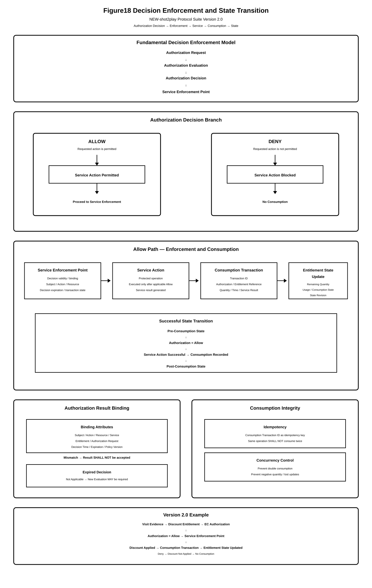
A representative lifecycle is:
Pending | v Authorization Evaluation | +-----> Deny | v Allow | +-----> Expired | +-----> Revoked | +-----> Invalid | v Service Execution
A state transition SHALL NOT bypass required authorization validation.
7.22 Decision State Continuity
An Authorization Decision SHALL preserve sufficient state continuity to permit the implementation to determine whether the Decision remains valid.
The state continuity MAY be maintained through:
- Decision Identifier;
- state version;
- transaction reference;
- service execution reference;
- Entitlement state reference; and
- Policy Version reference.
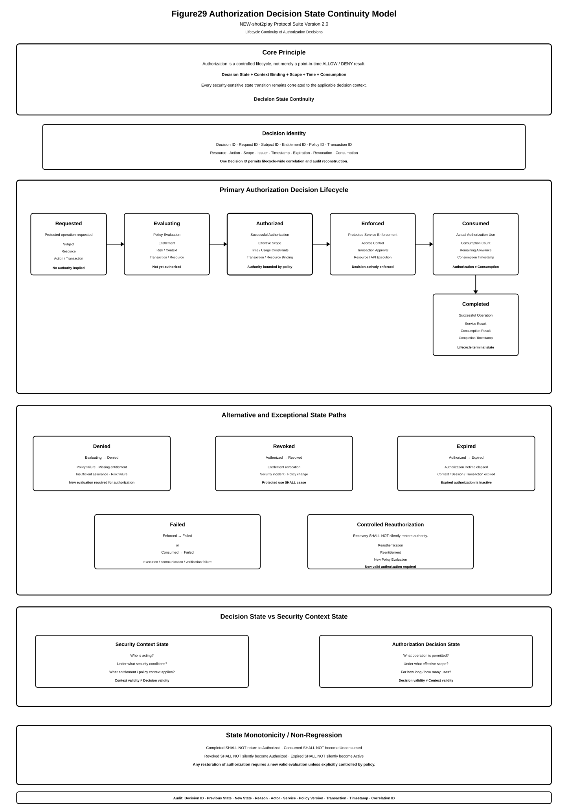
7.23 Decision Lifecycle
The Authorization Decision lifecycle SHALL support creation, validation, enforcement, invalidation, and termination.
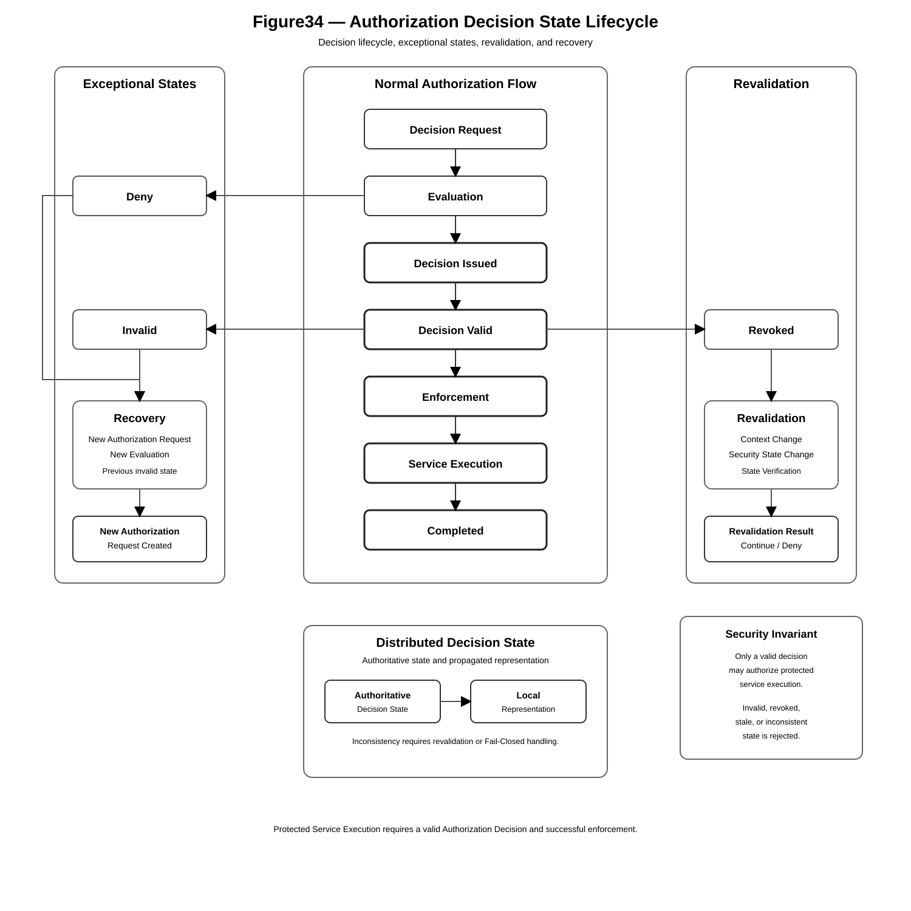
The lifecycle SHALL ensure that an Authorization Decision that has become invalid cannot remain effective solely because it was previously granted.
7.24 Revocation
An Authorization Decision MAY be revoked before its nominal expiration time.
Revocation MAY result from:
- Entitlement revocation;
- Policy revocation;
- security state change;
- administrative action;
- resource state change;
- transaction cancellation; or
- other security-relevant events.
A revoked Authorization Decision SHALL NOT authorize subsequent Service execution.
7.25 Revocation and Revalidation
Where an Authorization Decision remains effective for a period of time, the implementation SHOULD support revalidation against current authorization state.
Revalidation SHALL determine whether the conditions supporting the Decision remain satisfied.
Revalidation MAY be triggered by:
- time interval expiration;
- Entitlement state change;
- Policy state change;
- security event;
- resource state change; or
- explicit Service request.
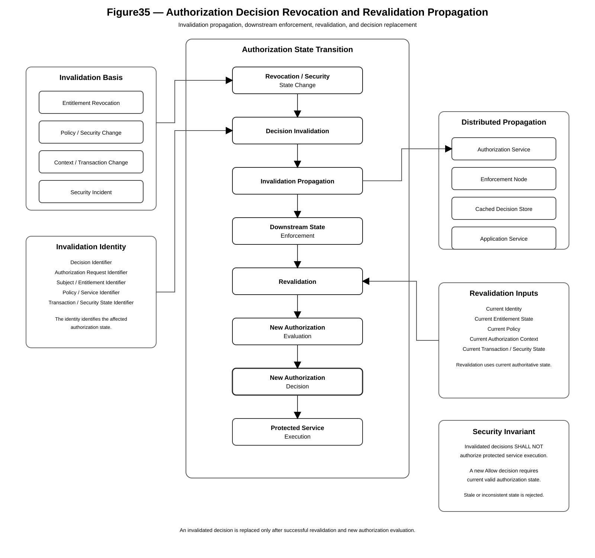
7.26 Authorization Invalidation
An Authorization Decision SHALL become Invalid when a required condition for continued authorization is no longer satisfied and the applicable protocol requires invalidation.
Invalidation MAY be caused by:
- Entitlement expiration;
- Entitlement revocation;
- Policy change;
- security state change;
- Decision integrity failure;
- binding failure; or
- distributed state inconsistency.
An Invalid Decision SHALL NOT be treated as Allow.
7.27 Invalidation and Fail-Closed Propagation
Where an authorization dependency becomes invalid, the invalid state SHALL propagate to the Authorization Decision when that dependency is required for continued authorization.
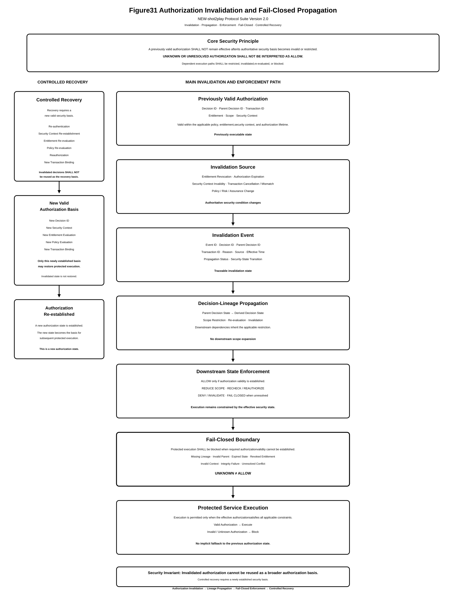
The propagation mechanism SHALL prevent an invalid upstream state from being interpreted as a valid downstream authorization grant.
7.28 Authorization Decision Dependency Model
The Authorization Decision SHALL depend on all required authorization inputs.
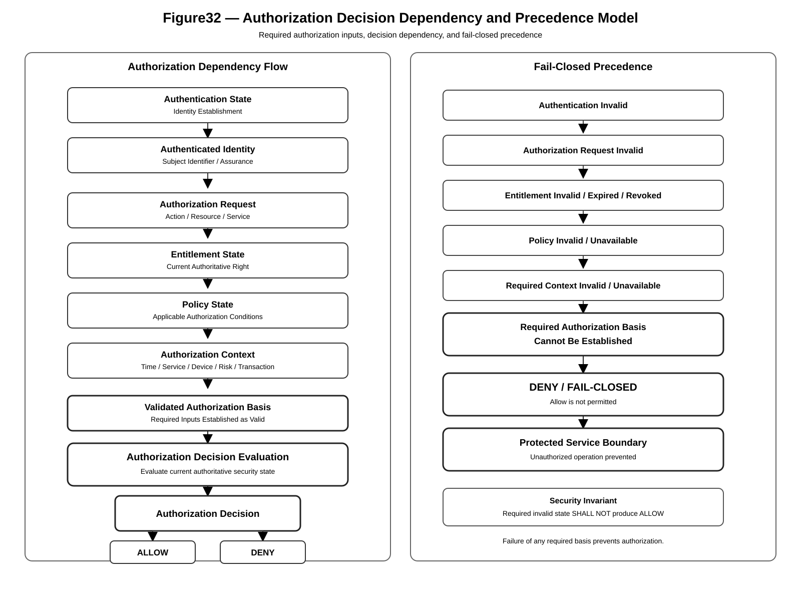
The dependency model SHALL establish that a Decision cannot be validly generated when a required dependency is missing, invalid, expired, revoked, or inconsistent.
7.29 Decision and Service Execution Continuity
Where a Service Action spans multiple processing stages, the Authorization Decision SHALL remain associated with the execution throughout the protected operation.
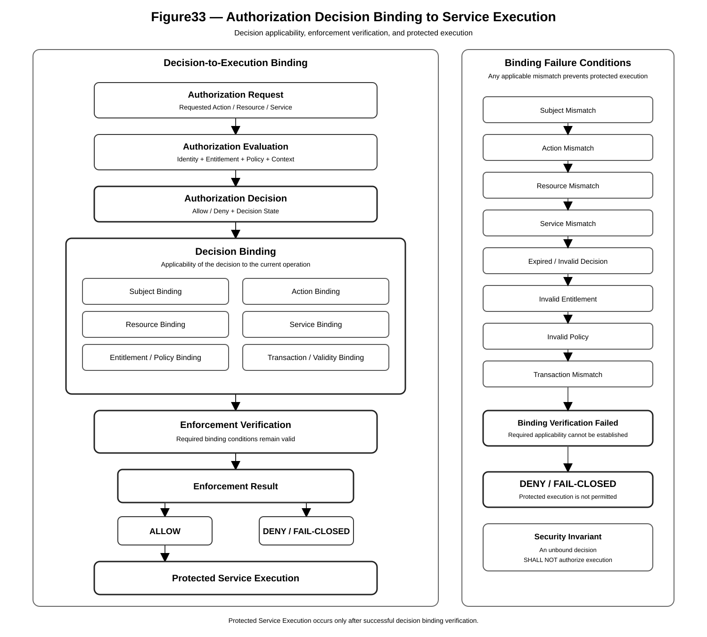
An intermediate processing component SHALL NOT silently replace, weaken, or broaden the authorization scope.
Where the Service Action is delegated to another trusted component, the authorization binding SHALL be preserved or explicitly re-established.
7.30 Distributed Authorization
The Authorization Protocol MAY be implemented across multiple distributed components.
Distributed components MAY include:
- Authorization Service;
- Policy Evaluation Service;
- Entitlement Service;
- Service Gateway;
- Application Service; and
- Audit or Security Service.
Distributed processing SHALL preserve the semantic meaning of the Authorization Decision.
7.31 Distributed Decision Consistency
Where multiple components maintain or consume the same Authorization Decision, they SHALL use a consistent Decision identity and state model.
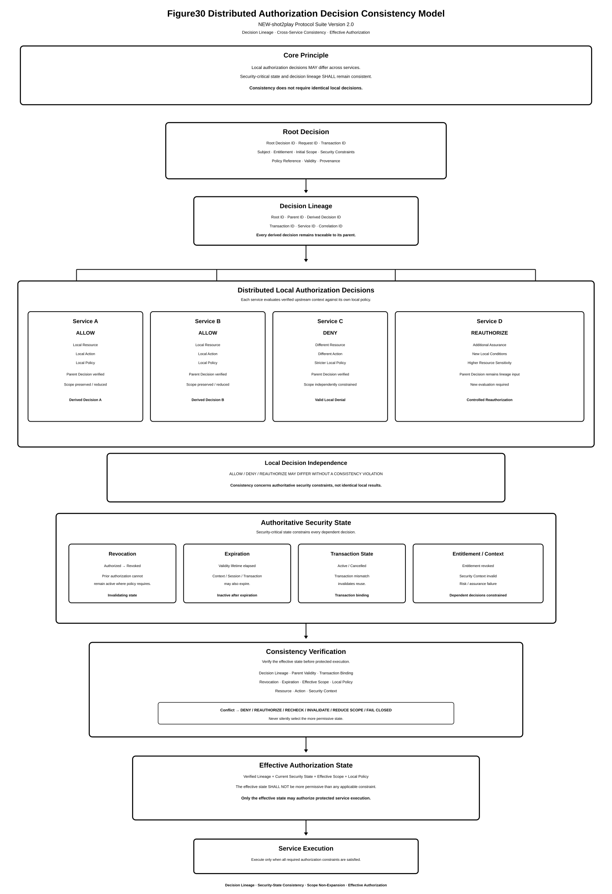
A component SHALL NOT independently convert a Deny, Invalid, Revoked, or Expired state into Allow.
State propagation SHALL preserve security-relevant precedence.
7.32 Distributed Authorization Context Reconstruction
A distributed implementation MAY reconstruct Authorization Context at a downstream processing component.
Context reconstruction SHALL use authoritative sources and SHALL preserve the authorization semantics of the original request.
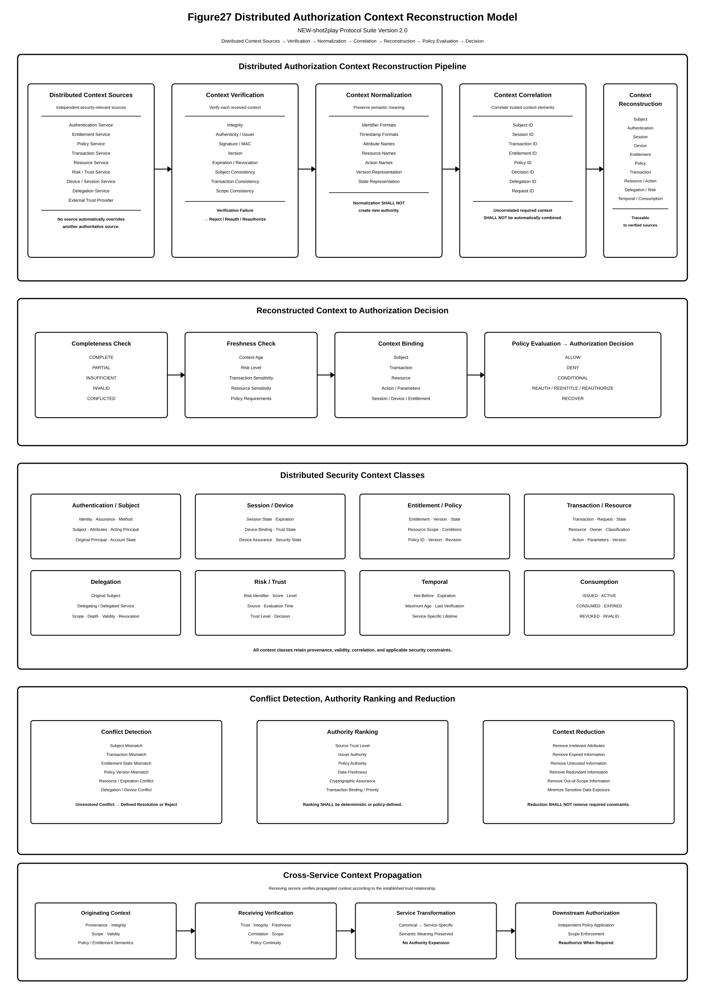
A reconstructed context SHALL NOT be treated as equivalent to the original context when security-relevant state has changed.
7.33 Authorization Context Continuity
Where authorization processing spans multiple protocol components, the Authorization Context SHALL remain traceable across the processing chain.
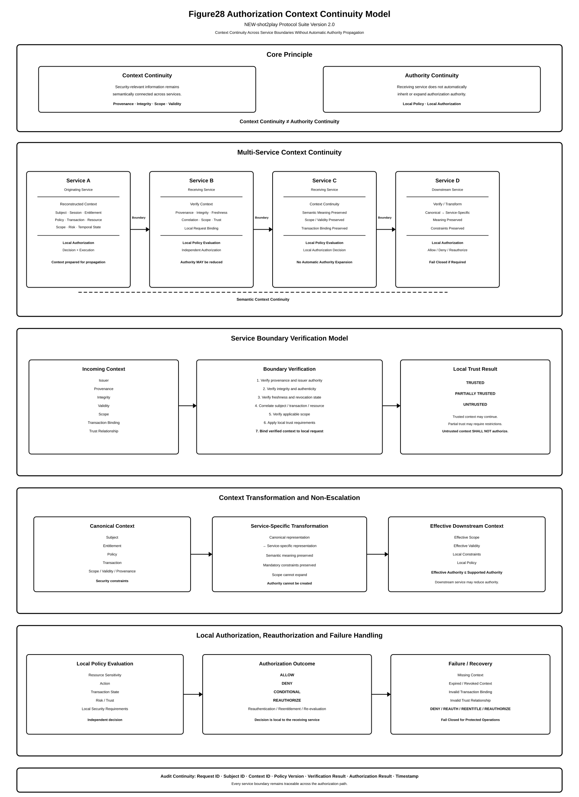
The implementation SHOULD preserve context provenance, integrity, and freshness throughout the authorization operation.
7.34 Authorization Scope Propagation
Authorization scope SHALL propagate consistently across distributed processing stages.
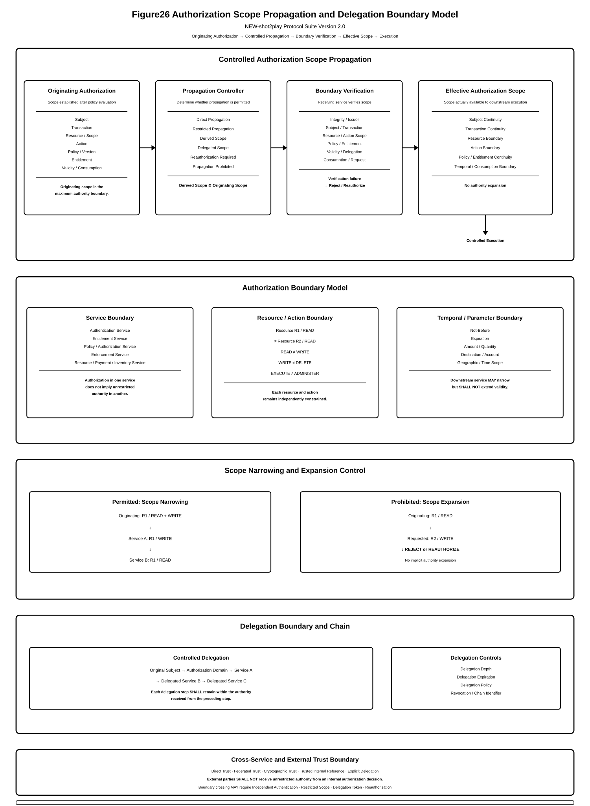
A downstream component SHALL NOT broaden an authorization scope without a new valid Authorization Decision or an explicitly defined delegation rule.
7.35 Fail-Closed Authorization
The Authorization Layer SHALL fail closed whenever a required condition for an Allow Decision cannot be reliably established.
Fail-Closed behavior SHALL apply to security-relevant conditions including:
- missing required authorization input;
- invalid Entitlement state;
- expired Entitlement;
- revoked Entitlement;
- invalid Policy Evaluation result;
- invalid Authorization Context;
- Decision integrity failure;
- binding failure;
- distributed state inconsistency; and
- security state invalidation.
A failure SHALL NOT be converted into an Allow result merely because a previous Decision was Allow.
7.36 Security Invariant
The Authorization Protocol SHALL maintain security invariants throughout the lifetime of an Authorization Decision.
At minimum, the following invariants SHALL apply:
- An Allow Decision SHALL correspond to a valid Authorization Request.
- An Allow Decision SHALL be supported by the required Entitlement state.
- An Allow Decision SHALL be supported by the applicable Policy Evaluation.
- An Allow Decision SHALL remain within its defined Authorization Scope.
- An Invalid, Revoked, or Expired Decision SHALL NOT authorize Service Execution.
- A downstream component SHALL NOT broaden an Authorization Decision.
- A security-relevant invalidation SHALL propagate to dependent authorization state.
- Failure to establish a required condition SHALL prevent Allow.
7.37 Revocation State Propagation
Where an upstream authorization dependency is revoked, the revocation state SHALL be capable of propagating to dependent Authorization Decisions.
The propagation mechanism MAY be push-based, pull-based, event-based, or implemented through another deterministic mechanism.
Regardless of implementation method, a dependent component SHALL not continue to enforce an Authorization Decision that is known to be revoked.
7.38 Revalidation Requirements
An implementation SHALL define when an existing Authorization Decision requires revalidation.
Revalidation SHALL be required where continued authorization depends upon state that may change during the lifetime of the Decision.
Representative triggers include:
- Entitlement state change;
- Policy state change;
- security state change;
- resource state change;
- transaction state change;
- validity interval boundary; and
- explicit security event.
A failed revalidation SHALL prevent continued Allow enforcement when the affected condition is required for authorization.
7.39 Authorization Decision Freshness
An Authorization Decision MAY have a freshness requirement.
Freshness MAY be represented by:
- Decision Version;
- state version;
- issue timestamp;
- revalidation timestamp;
- expiration time; or
- an equivalent freshness indicator.
A stale Decision SHALL NOT be used where current authorization state is required.
7.40 Authorization Replay Protection
An Authorization Decision SHALL be protected against unauthorized replay where replay could cause an unauthorized Service Action.
Replay protection MAY use:
- unique Authorization Identifier;
- request identifier;
- transaction identifier;
- nonce;
- Decision Version;
- validity interval; or
- cryptographic binding.
An Authorization Decision SHALL NOT be replayable across an unauthorized Service, Resource, Action, or authorization context.
7.41 Authorization Decision Integrity
The integrity of an Authorization Decision SHALL be protected against unauthorized modification.
Where cryptographic protection is used, the receiving component SHALL verify the applicable integrity mechanism before enforcement.
A Decision that fails integrity verification SHALL be treated as Invalid or Fail-Closed and SHALL NOT authorize Service Execution.
7.42 Authorization Decision Provenance
The implementation SHOULD maintain provenance information sufficient to determine how an Authorization Decision was generated.
Provenance SHOULD include:
- Authorization Request;
- Identity reference;
- Entitlement reference;
- Policy Identifier;
- Policy Version;
- Policy Evaluation result;
- Authorization Context reference;
- Decision state; and
- Service execution reference.
7.43 Audit Traceability
Security-relevant Authorization operations SHOULD be traceable through an audit record or equivalent protected event stream.
An audit record SHOULD identify:
- Authorization Identifier;
- Authorization Request Identifier;
- Decision result;
- Decision state;
- Policy Version;
- Entitlement reference;
- Service Action;
- Decision timestamp;
- revalidation event, where applicable; and
- revocation or invalidation event, where applicable.
Audit information SHALL be protected against unauthorized modification where it is relied upon for security or traceability.
7.44 Authorization and Cross-Service Entitlement
An Authorization Decision MAY depend on an Entitlement issued or established by a different Service.
Where Cross-Service Entitlement Reuse is supported, the receiving Service SHALL independently determine whether the Entitlement satisfies the applicable Policy conditions.
The receiving Service SHALL evaluate at minimum:
- Entitlement validity;
- Entitlement scope;
- issuer or authority;
- identity binding;
- Policy applicability; and
- current authorization context.
Cross-Service Entitlement Reuse SHALL NOT bypass local Authorization Policy.
7.45 Conditional Service Execution
A Service MAY permit execution only while the conditions associated with an Authorization Decision remain satisfied.
Where execution is conditional, the Service SHALL evaluate or receive sufficient state to determine whether the conditions remain valid.
A Service SHALL terminate, suspend, or deny protected execution when a required continuing authorization condition becomes unsatisfied.
7.46 Authorization Decision and Service Enforcement
The Service Enforcement Point SHALL enforce the Authorization Decision before execution of a protected operation.
The Enforcement Point SHALL verify the applicable:
- Decision state;
- Decision validity;
- Authorization Scope;
- Service binding;
- Resource binding;
- Action binding; and
- continuing security conditions.
The Enforcement Point SHALL NOT rely solely upon the presence of an authenticated session.
7.47 Authorization Decision Enforcement Failure
If the Service cannot establish that a valid Authorization Decision exists, the protected operation SHALL NOT be executed.
An Enforcement failure MAY result in:
- Deny;
- Fail-Closed;
- Retry;
- Revalidation; or
- reconstruction of the required Authorization Context.
Recovery processing SHALL NOT bypass required authorization conditions.
7.48 Authorization Security Requirements
A conforming implementation SHALL protect the Authorization Protocol against unauthorized authorization grants.
At minimum, the implementation SHALL:
- bind Authorization Decisions to Authorization Requests;
- validate required Entitlement state;
- validate applicable Policy Evaluation results;
- maintain Authorization Scope;
- protect Decision integrity;
- prevent unauthorized Decision replay;
- support required invalidation and revocation;
- preserve Decision state precedence;
- fail closed when required authorization conditions cannot be established; and
- prevent invalid Decisions from authorizing Service Execution.
7.49 Authorization Conformance Requirements
An implementation conforms to the Authorization Protocol requirements of this chapter only if it:
- implements an identifiable Authorization Object or equivalent authorization state;
- accepts an explicit Authorization Request;
- performs Authorization Evaluation using required authorization inputs;
- generates an explicit Authorization Decision;
- defines Decision states and state transitions;
- binds Decisions to the applicable Service Action;
- enforces Authorization Scope;
- supports required invalidation and revocation behavior;
- prevents unauthorized replay;
- maintains integrity and provenance of security-relevant Decision state;
- preserves authorization semantics across distributed components;
- fails closed when required conditions cannot be established; and
- prevents an invalid, revoked, or expired Decision from authorizing Service Execution.
7.50 Design Invariants
The following invariants SHALL govern the Authorization Layer.
- Authentication SHALL NOT imply Authorization.
- Entitlement SHALL NOT imply Authorization without Policy and Authorization Evaluation.
- Policy Evaluation SHALL NOT itself constitute Service execution.
- An Allow Decision SHALL depend on all required authorization conditions.
- An Authorization Decision SHALL remain within its defined scope.
- Invalidation, revocation, and expiration SHALL prevent continued enforcement where applicable.
- A downstream component SHALL NOT broaden an upstream authorization grant.
- A failure to establish a required condition SHALL prevent Allow.
- Authorization state SHALL remain traceable across distributed processing.
- Service execution SHALL require a valid Authorization Decision.
7.51 Summary
The Authorization Layer provides the final protocol-level decision mechanism between Policy Evaluation and protected Service Execution.
The Authorization Protocol separates the generation of an Authorization Decision from execution of the authorized operation. This separation permits authorization state to remain independently traceable, revocable, revalidated, and enforceable across distributed Service components.
The model establishes that:
- Authentication establishes identity but does not establish authorization;
- Entitlement establishes applicable rights or usage qualifications;
- Policy Evaluation determines whether applicable conditions are satisfied;
- Authorization Evaluation combines the required authorization inputs;
- the Authorization Decision explicitly identifies Allow, Deny, or an equivalent fail-closed result;
- the Decision SHALL be bound to the Authorization Request and Service Action;
- the Decision SHALL remain subject to scope, validity, and continuing conditions;
- revocation and invalidation SHALL prevent unauthorized continued execution;
- distributed components SHALL preserve Decision semantics;
- failure to establish required authorization state SHALL prevent Allow; and
- protected Service Execution SHALL require a valid Authorization Decision.